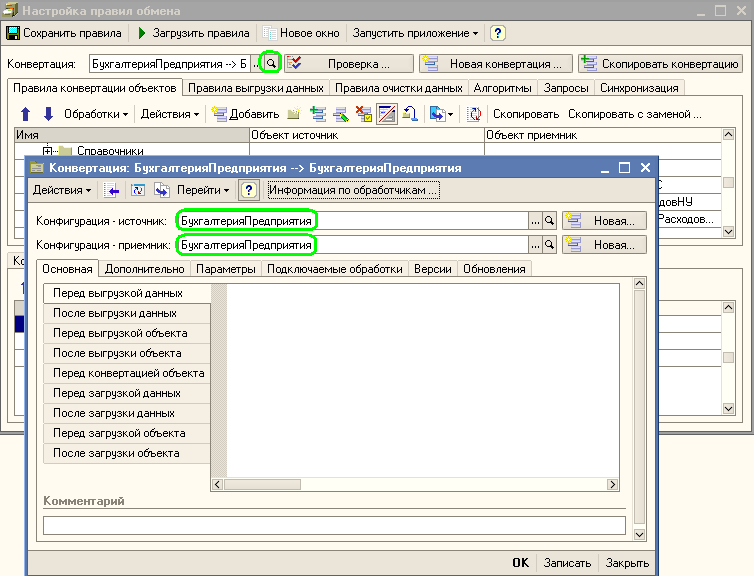
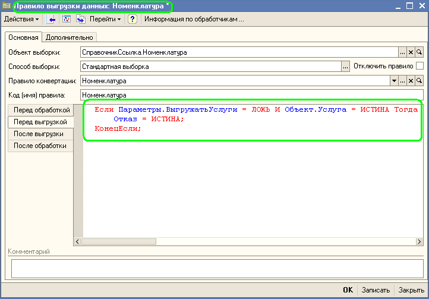

Мы знаем что такое правила обмена и зачем они нужны. Познакомимся более подробно с дополнительным функционалом работы с правилами обмена. Откроем настройки правил обмена данными (конвертации):

В правилах обмена задаются конфигурации источника и приемника для данных, кроме того:
Закладка "Дополнительно":
Можно указать имя файла по умолчанию для сохранения правил обмена, модулей выгрузки и загрузки данных для 7.7, наименование правил обмена.
Закладка "Параметры":
Допустим, офис принимает заказы исключительно на товары, поэтому желательно установить запретит на выгрузку услуг. Если для элемента справочника Номенклатура реквизит Услуга установлен Истина, то он гарантированно не должен выгружаться. Контроль выгрузки услуг лучше всего сразу сделать опциональным, чтобы не менять правила, в случае, если удаленный офис станет принимать заказы и на услуги.
Для этого случая нам придется освоить два новых приема работы с конфигурацией "Конвертация данных" - использование обработчиков и настройку параметров.
Параметры – это специализированная структура данных в алгоритмах выгрузки, с помощью которой можно обращаться к переменным обработки. Настройка структуры параметров для правил конвертации осуществляется в конфигурации "Конвертация данных", а установка значений параметров возможна в форме обработки выгрузки и загрузки данных.
Для редактирования параметров откроем форму элемента справочника Конвертации для редактируемых правил обмена и перейдем на закладку параметры. Создадим новый элемент справочника Параметры. Присвоим имя параметра – ВыгружатьУслуги. Имя параметра служит для обращения к нему в структуре Параметры при написании программного кода в обработчиках. Наименование будет отображаться в табличной части Параметров в форме обработки универсального обмена данными. Для того, чтобы параметр был виден в диалоге при настройке выгрузки нужно установить флажок "Устанавливать в диалоге" и выбрать тип значения параметра. Для работы с параметрами в диалоге необходимо также установить флажок "Выгружать параметры в формате версии 2.01" в форме элемента справочника Конвертации.

Недостаточно просто указать параметры, надо чтобы алгоритм выполнения выгрузки "понимал", в каком случаем выгружать элемент, а в каком нет. Для подобных (и многих других) случаев используется механизм обработчиков. Суть его заключается в том, что в ключевых точках выполнения всех базовых алгоритмов выгрузки и загрузки данных обрабатывается код, написанный разработчиком при создании правил обмена. Естественно, что использование такого тонкого инструмента требует осторожности и продуманности. Мы рекомендуем перед написанием собственных обработчиков внимательно ознакомится со справкой к конфигурации "Конвертация данных 2.0", где описаны все доступные в обработчиках переменные и способы их использования, а также перечислены виды обработчиков и особенности их вызова в алгоритмах обмена данными.
Для нашей цели необходимо использовать обработчик правила выгрузки "Перед выгрузкой". Откроем правило выгрузки данных Номенклатура и поместим в поле "Перед выгрузкой" на закладке "События" следующий программный код:

Что же делает наш обработчик? При написании программного кода мы использовали переменные алгоритмов выгрузки данных. Структура Параметры служит для обращения к параметру ВыгружатьУслуги, который задается в форме обработки обмена данными. Переменная объект предоставляет доступ к выгружаемому объекту. А переменная Отказ позволяет контролировать отказ от выгрузки текущего объекта. Обработчик исполняется непосредственно перед началом выгрузки объекта, что и дает возможность отменить выгрузку объекта.
Наша задача решена, осталось только сохраним правила обмена в файле. После этого откроем универсальную обработку выгрузки и загрузки данных и посмотрим как изменилась ее логика работы:

ТОЛЬКО ДЛЯ ОБМЕНА V8 - V8 И ОБРАБОТКИ ВЫГРУЗКИ И ЗАГРУЗКИ НЕ НИЖЕ 2.0.18.1
Есть возможность передавать параметры из одной конфигурации в другую. Достаточно для этого на закладке "Параметры" установить флажок "Передавать параметр при выгрузке" и этот параметр будет помещен в файл обмена и к его значению можно будет обратиться при загрузке данных. Можно для параметра указать правило конвертации, согласно которому должны будут конвертироваться значения. При помощи флажка "Передавать параметр при выгрузке" можно передавать только те параметры, которые редактируются в диалоге при выгрузке данных. Если же нужно передать параметр, которые в этом диалоге не присутствует, то нужно вызвать процедуру:
Процедура ПередатьОдинПараметрВПриемник(Имя, ИсходноеЗначениеПараметра, ПравилоКонвертации = "") Экспорт
На закладке Параметры выгрузки появился параметр, изменяя значения которого услуги либо выгружаются, либо не выгружаются.
На закладках Версии и Обновления можно посмотреть информацию о выгруженных и загруженных версиях правил обмена.
Следующий раздел: «Подробное знакомство с правилами конвертации объектов»